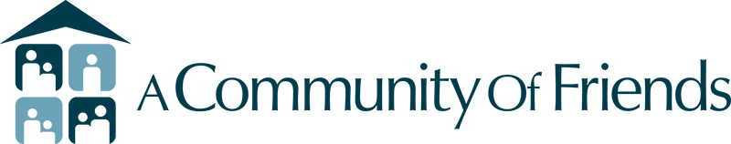
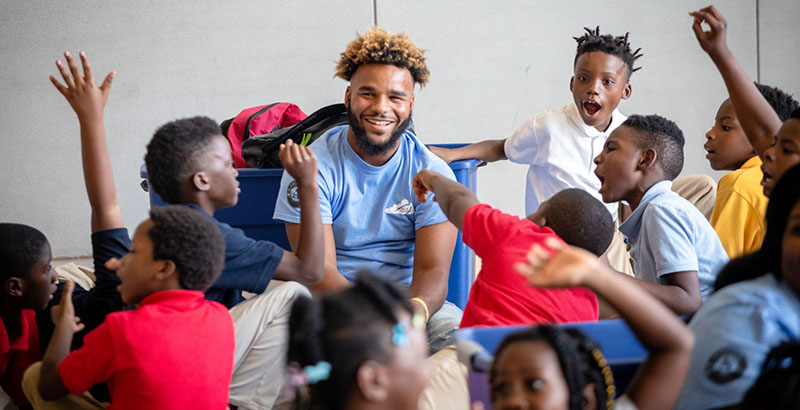
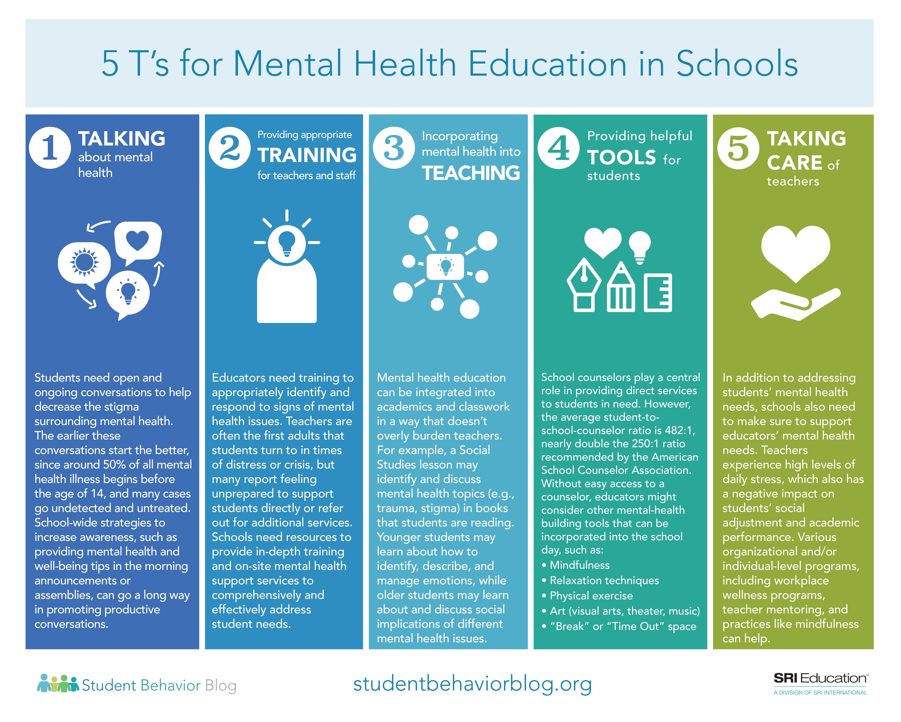

Partnerships
Here are the partnerships associated with our website:
- A Community of Friends - ACOF was the first agency to successfully implement the permanent supportive housing model throughout LA County. We are one of only a handful of agencies that offer supportive and service-enriched affordable housing for homeless individuals and families living with mental illness in Los Angeles County.
- California Department of Education - Provides strategies, resources, and training in psychological and mental health issues, including coping with tragedy, crisis intervention and prevention, school psychology and suicide prevention.
- Life Adjustment Team - One of the most popular after school programs for children and teens with mental health disorders is the Boys and Girls Club of America. The Boys and Girls Club offers a variety of programs and services that help children and young adults with mental health disorders learn valuable skills, take part in athletic activities, and find success in all areas of life. The Club also provides a safe and supportive environment for children and teens to socialize and make friends.

Outside Sources
Here are some resources from external sources that you may find useful:
- Afterschool Programs to Improve Social-Emotional, Behavioral, and Physical Health - Afterschool programs provide an opportunity to mitigate these risk factors and support equitable healthy development during middle childhood for both boys and girls. 7 This targeted literature review sought to identify afterschool programs serving children 6 to 12 years of age that report positive social-emotional, behavioral, and physical health outcomes and to determine if there is any differential programming or impact by gender
- Advancing School - Based Mental Health In California - Prevention and early intervention of mental health issues are critical to ensuring student success - students who are experiencing socioemotional, behavioral or psychological distress will struggle to engage with the curriculum and maintain positive relationships with peers and adults.
- Afterschool Supports Children's Well-Being and Healthy development - Afterschool and summer programs play an essential role in supporting the healthy development of young people by serving as a safe space that fosters belonging, develops supportive relationships with peers and adult mentors, encourages healthy behaviors, and helps young people build and cultivate the skills necessary to navigate through the struggles and challenges they may come up against in life.

Program Statistics
Here you can find statistics related to programs within external organizations:
- Improved Social and Emotional Skills: According to a study by the Afterschool Alliance, students who participate in high-quality afterschool programs demonstrate significant improvements in social and emotional skills, including self-confidence, communication, and conflict resolution. This can lead to better coping mechanisms for dealing with ongoing life issues.
Reduced Risky Behaviors: Research conducted by the American Institutes for Research found that students who regularly attend afterschool programs are less likely to engage in risky behaviors such as substance abuse, juvenile delinquency, and violence. These programs provide a structured and supportive environment that helps students make positive choices and develop healthy habits.
Academic Success and Stress Reduction: Afterschool programs have been shown to have a positive impact on academic performance and reducing stress levels among students. According to the Afterschool Alliance, students who participate in these programs are more likely to complete their homework, improve their grades, and develop effective time management skills. This success in academics can alleviate some of the stress associated with school and other ongoing life challenges.
